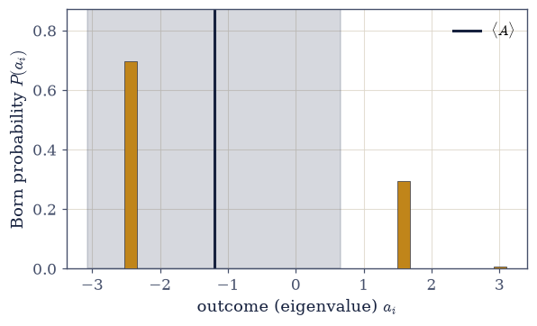
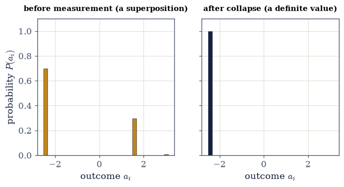

6.5 The Postulates of Quantum Mechanics#
Notebook overview#
The last notebook let an experiment back us into quantum mechanics. This one writes down what we were backed into. Every rule we used to explain the Stern–Gerlach data — a state is a vector, an observable is a Hermitian operator, an outcome is an eigenvalue drawn with a certain probability, a measurement projects — is here stated once and for all as a postulate. There is no new physics in this notebook; the student has already seen each rule in action. What is new is the systematization: naming the rules, making them precise, and showing they fit together into a consistent whole. The entire edifice of quantum mechanics rests on the five short statements below.
The notebook is built on a single pedagogical spine: each postulate is introduced by recalling the Stern–Gerlach fact it explains, then stated formally, then verified computationally. No postulate is met cold. And every one is stated in the language Movement 0 built — states are the unit vectors of §6.1, observables the Hermitian operators of §6.2, measurement the projection of §6.3. This is where that arsenal proves its worth: the postulates are not new mathematics, only physics asserted about the mathematics we already have.
From the five postulates two derived quantities follow, and they are the bridge from the formalism
to the laboratory: the expectation value \(\langle A\rangle=\langle\psi|A|\psi\rangle\), the mean
of many measurements, and the variance \((\Delta A)^2=\langle A^2\rangle-\langle A\rangle^2\),
their spread — the same mean and variance of a distribution from §5.2, now read off a quantum state.
The variance vanishes exactly on eigenstates (the definite values), and it is the quantity the
uncertainty relation of §6.6 will bound. We work throughout in the two-state system and small finite
examples, where every postulate is a few lines of numpy.
As in every Volume VI notebook, each exercise opens with a crystal-clear statement and enumerated parts, each naming the exact operation — numpy.vdot for \(\langle\psi|A|\psi\rangle\),
numpy.linalg.eigh for the spectral data, explicit projectors via numpy.outer, and
numpy.random.default_rng for sampling outcomes.
The five postulates, in brief. (1) State: a physical state is a unit vector \(|\psi\rangle\) (a ray — global phase unphysical). (2) Observable: a measurable quantity is a Hermitian operator \(A\); its eigenvalues are the possible outcomes. (3) Born rule: outcome \(a_i\) occurs with probability \(|\langle a_i|\psi\rangle|^2=\langle\psi|P_i|\psi\rangle\). (4) Collapse: the state jumps to the normalized projection \(P_i|\psi\rangle/\|P_i|\psi\rangle\|\) onto the measured eigenspace (the Lüders rule). (5) Dynamics: between measurements \(i\hbar\,\partial_t|\psi\rangle =H|\psi\rangle\) — stated here, worked out in §6.7.
How to read the checks. Each exercise closes with a
validatecall: an observable’s eigenvalues as outcomes; the Born rule in its three equivalent forms, summing to one; the expectation value two ways; the variance non-negative and zero on eigenstates; collapse giving a repeatable definite value; and the degenerate (Lüders) case projecting onto a whole eigenspace. A ✓ is strong evidence; a ✗ is a prompt to locate the discrepancy.Conventions and scope. Unit states; Hermitian observables; \(\hbar=1\) unless shown. The dynamics postulate is stated but its working-out (the time-evolution operator, precession, Rabi) is §6.7; the uncertainty relation that bounds \(\Delta A\) is §6.6; the Bloch-sphere geometry is §6.8; mixed states and the density matrix are §6.26. See Sakurai & Napolitano (§1.3–1.4); Nielsen & Chuang; and Notebooks §6.1 (states), §6.2 (observables), §6.3 (projectors), §6.4 (the experiment), §5.2 (expectation and variance).
Theory in brief#
Postulate 1 — the state#
Recall (§6.4): the Stern–Gerlach atom was a vector in \(\mathbb{C}^2\). Formally,
States differing by a global phase are the same physical state (§6.1).
Postulate 2 — observables#
Recall (§6.4): \(S_z\), with outcomes \(\pm\hbar/2\) and definite-value states \(|{\pm}z\rangle\). Formally,
and its orthonormal eigenvectors are the definite-value states (§6.2).
Postulate 3 — the Born rule#
Recall (§6.4): the \(\cos^2(\theta/2)\) law. Measuring \(A\) on \(|\psi\rangle\) gives \(a_i\) with
where \(P_i\) projects onto the \(a_i\)-eigenspace (§6.3). The probabilities sum to one because the projectors resolve the identity, \(\sum_iP_i=I\) (§6.3).
Postulate 4 — collapse#
Recall (§6.4): the projected \(|{+}x\rangle\) atom; the sequential experiment. Immediately after outcome \(a_i\),
A repeated measurement then gives \(a_i\) with certainty — repeatability, the condition that lets “the system has value \(a_i\) now” mean something. For a degenerate outcome the projection is onto the whole eigenspace (the Lüders rule), not a single eigenvector.
Postulate 5 — dynamics#
Between measurements the state evolves by the Schrödinger equation,
with \(H\) the Hamiltonian (a Hermitian observable, the energy). We state it here as the fifth postulate; its solution — the unitary \(U(t)=e^{-iHt/\hbar}\) (the exponential map of §6.2, the function-of-operator of §6.3) — and its consequences (precession, Rabi) are developed in §6.7.
Derived — expectation and variance#
The mean of many measurements of \(A\) on identically-prepared states, and their spread, are
the same mean and variance of a distribution as in §5.2. The variance vanishes exactly when \(|\psi\rangle\) is an eigenstate of \(A\) — a definite value — and \(\Delta A\) is what the uncertainty relation bounds (§6.6).
Setup#
import matplotlib.pyplot as plt
import numpy as np
from ecp import draw, validate
ACCENT, INK, SOFT = draw.ACCENT, draw.INK, draw.SOFT
RED = "#c1121f"
# Conventions: states are unit complex vectors; observables are Hermitian matrices;
# amplitudes/expectations use numpy.vdot (conjugate-first, §6.1); the spectral data come from
# numpy.linalg.eigh (real eigenvalues, orthonormal eigenvectors, §6.2); projectors are numpy.outer(e,
# numpy.conj(e)) (§6.3); outcomes are sampled with numpy.random.default_rng. We set ℏ=1.
def projector(e):
"""The rank-1 projector $|e\\rangle\\langle e|$ onto a normalized state ``e`` (§6.3).
Built with ``numpy.outer(e, numpy.conj(e))``. Eigenspace projectors are sums of these over an
orthonormal basis of the eigenspace.
"""
return np.outer(e, np.conj(e))
def eigenspace_projectors(A, tol=1e-9):
"""Distinct eigenvalues of a Hermitian ``A`` with the projector onto each **eigenspace**.
Diagonalizes ``A`` with ``numpy.linalg.eigh`` and groups eigenvectors sharing an eigenvalue
(within ``tol``), summing their rank-1 projectors. For a non-degenerate eigenvalue the projector is
rank-1; for a degenerate one it is the projector onto the whole eigenspace — exactly what the Born
rule and the Lüders collapse require.
Parameters
----------
A : numpy.ndarray
A Hermitian matrix.
tol : float, optional
Eigenvalues within ``tol`` are treated as equal (degenerate).
Returns
-------
list of (float, numpy.ndarray)
``(eigenvalue, eigenspace projector)`` for each distinct eigenvalue.
"""
evals, evecs = np.linalg.eigh(A)
groups = []
for k, a in enumerate(evals):
for g in groups:
if abs(g[0] - a) < tol:
g[1] = g[1] + projector(evecs[:, k])
break
else:
groups.append([a, projector(evecs[:, k])])
return [(a, P) for a, P in groups]
def outcome_probabilities(A, psi):
"""The possible outcomes of measuring ``A`` on ``psi`` and their Born probabilities {eq}`eq-post-born`.
Returns ``(a_i, P(a_i))`` for each distinct eigenvalue, with $P(a_i)=\\langle\\psi|P_i|\\psi\\rangle$
(``numpy.vdot(psi, P_i @ psi).real``), the eigenspace projector form that is correct even when the
eigenvalue is degenerate. The probabilities sum to one because the projectors resolve the identity.
Parameters
----------
A : numpy.ndarray
A Hermitian observable.
psi : numpy.ndarray
A unit state vector.
Returns
-------
list of (float, float)
``(eigenvalue, probability)`` pairs.
"""
return [(a, np.vdot(psi, P @ psi).real) for a, P in eigenspace_projectors(A)]
def expectation(A, psi):
"""The expectation value $\\langle A\\rangle=\\langle\\psi|A|\\psi\\rangle$ {eq}`eq-postulates-expectation`.
Computed as ``numpy.vdot(psi, A @ psi).real`` — real because $A$ is Hermitian. Equals
$\\sum_i a_i P(a_i)$, the laboratory average of many measurements (the §5.2 expectation, quantum).
"""
return np.vdot(psi, A @ psi).real
def variance(A, psi):
"""The variance $(\\Delta A)^2=\\langle A^2\\rangle-\\langle A\\rangle^2$ {eq}`eq-variance`.
Non-negative, and zero exactly when ``psi`` is an eigenstate of ``A`` (a definite value). Its square
root $\\Delta A$ is the uncertainty bounded by the relation of §6.6.
"""
return expectation(A @ A, psi) - expectation(A, psi) ** 2
def measure(A, psi, rng):
"""Sample one measurement of ``A`` on ``psi`` (Born rule), returning the outcome and collapsed state.
Draws an eigenvalue $a_i$ with probability $\\langle\\psi|P_i|\\psi\\rangle$ using
``rng.choice``, then **collapses** the state to the normalized projection onto that eigenspace,
$P_i|\\psi\\rangle/\\|P_i|\\psi\\rangle\\|$ (Postulate 4; the Lüders rule for a degenerate outcome).
Parameters
----------
A : numpy.ndarray
A Hermitian observable.
psi : numpy.ndarray
A unit state vector.
rng : numpy.random.Generator
A ``numpy.random.default_rng`` instance.
Returns
-------
outcome : float
The eigenvalue obtained.
collapsed : numpy.ndarray
The post-measurement state.
"""
spectrum = eigenspace_projectors(A)
probs = np.array([np.vdot(psi, P @ psi).real for _, P in spectrum])
probs = probs / probs.sum() # guard against rounding before sampling
idx = rng.choice(len(spectrum), p=probs)
a_i, P_i = spectrum[idx]
collapsed = P_i @ psi
return a_i, collapsed / np.linalg.norm(collapsed)
Exercise 1 — States and observables (Postulates 1 and 2)#
Recall from §6.4 that the spin-\(z\) atom is a unit vector in \(\mathbb{C}^2\) and \(S_z\) is the observable whose eigenvalues \(\pm\tfrac12\) are the possible outcomes. Formalize this: given a normalized state \(|\psi\rangle\) and a Hermitian observable \(A\) on \(\mathbb{C}^3\), confirm \(|\psi \rangle\) is a legal state and \(A\) a legal observable, and list the possible outcomes and the definite-value states Eq. 405, Eq. 406.
Confirm \(|\psi\rangle\) is a unit vector, \(\langle\psi|\psi\rangle=1\), with
numpy.vdot.Confirm \(A\) is Hermitian,
numpy.allclose(A, A.conj().T).Diagonalize \(A\) with
numpy.linalg.eigh: the (real) eigenvalues are the possible outcomes, the orthonormal eigenvectors the definite-value states.Note the parallel to \(S_z\) in §6.4 — the same two-postulate structure, now in \(\mathbb{C}^3\).
⟨ψ|ψ⟩ = 1.000000 (unit state: True)
A Hermitian: True
possible outcomes (eigenvalues): [-2.4316 1.5851 3.0122]
definite-value states are the columns of the eigenvector matrix (orthonormal: True)
Validation 1#
✓ a state is a unit vector and an observable is a Hermitian operator whose real eigenvalues are the possible outcomes and whose orthonormal eigenvectors are the definite-value states
True
Exercise 2 — The Born rule and its three forms (Postulate 3)#
The Born rule is the quantitative content of the \(\cos^2(\theta/2)\) law of §6.4. For the state and observable of Exercise 1, compute the probability of each outcome three equivalent ways — from the amplitude, from the projector expectation, and from the projected norm — confirm they agree, and confirm the probabilities sum to one Eq. 407.
For each eigenvector \(|a_i\rangle\) compute \(P(a_i)=|\langle a_i|\psi\rangle|^2\) with
numpy.abs(numpy.vdot(a_i, psi))**2.Build the projector \(P_i=\)
numpy.outer(a_i, numpy.conj(a_i))and compute \(\langle\psi|P_i|\psi\rangle\) withnumpy.vdot(psi, P_i @ psi).real.Compute \(\|P_i|\psi\rangle\|^2\) with
numpy.linalg.norm(P_i @ psi)**2.Confirm all three agree for each outcome, and that \(\sum_i P(a_i)=1\) — a consequence of \(\sum_i P_i=I\) (the resolution of the identity, §6.3).
|⟨a_i|ψ⟩|² = [0.69704 0.29561 0.00736]
⟨ψ|P_i|ψ⟩ = [0.69704 0.29561 0.00736]
‖P_i|ψ⟩‖² = [0.69704 0.29561 0.00736]
three forms agree: True; Σ P(a_i) = 1.0000000000
Validation 2#
✓ the Born probability has three equivalent forms |⟨a_i|ψ⟩|² = ⟨ψ|P_i|ψ⟩ = ‖P_iψ‖², and they sum to one (ΣP_i = I) [max|Δ| = 6.66134e-16 (rtol=1e-12, atol=1e-09)]
True
Exercise 3 — The expectation value (Postulate 3, derived)#
The expectation value is the bridge from the operator to the laboratory average — the mean reading of many measurements of \(A\) on identically-prepared states. Compute it two ways for the state and observable of Exercise 1, confirm they agree, and confirm it is real Eq. 410.
Compute \(\langle A\rangle=\langle\psi|A|\psi\rangle\) with the
expectationhelper (numpy.vdot(psi, A @ psi).real).Compute \(\sum_i a_i P(a_i)\) from the eigenvalues and the Born probabilities of Exercise 2 (the
outcome_probabilitieshelper).Confirm the two agree, and that the imaginary part of \(\langle\psi|A|\psi\rangle\) is zero (real, because \(A\) is Hermitian). Frame: this is the §5.2 expectation \(\langle A\rangle=\sum_i a_i P(a_i)\), now read off a quantum state.
⟨A⟩ = ⟨ψ|A|ψ⟩ = -1.204194
⟨A⟩ = Σ a_i P(a_i) = -1.204194
agree: True; ⟨A⟩ real (Im = 2.2e-16)
Validation 3#
✓ the expectation value ⟨A⟩ = ⟨ψ|A|ψ⟩ equals Σ a_i P(a_i), the laboratory average of many measurements (§5.2 in the quantum setting) [got -1.20419 vs expected -1.20419 (rtol=1e-12)]
True
Exercise 4 — Variance and definite values (derived)#
The variance measures the spread of the outcomes — and it is the quantity the uncertainty relation (§6.6) will bound. Compute \((\Delta A)^2\) two ways for a general state, confirm it is non-negative, and show it vanishes exactly when the state is an eigenstate of \(A\) (a definite value, like the \(|{\pm}z\rangle\) atoms of §6.4) Eq. 411.
Compute \((\Delta A)^2=\langle A^2\rangle-\langle A\rangle^2\) with the
variancehelper (expectation(A @ A, psi) - expectation(A, psi)**2).Confirm it equals \(\sum_i(a_i- \langle A\rangle)^2P(a_i)\) from the Born probabilities, and that it is \(\ge0\).
Evaluate the variance in an eigenstate of \(A\) (a column of
numpy.linalg.eigh’s eigenvector matrix) and find it is zero — a state with a definite value. Frame: zero variance is what “definite value” means.
(ΔA)² = ⟨A²⟩ − ⟨A⟩² = 3.480826
(ΔA)² = Σ(a_i − ⟨A⟩)²P(a_i) = 3.480826 (≥ 0, forms agree: True)
variance in an eigenstate of A: 8.88e-16 (zero — a definite value)
Validation 4#
✓ the variance ⟨A²⟩−⟨A⟩² is non-negative, agrees with Σ(a_i−⟨A⟩)²P(a_i), and vanishes exactly on eigenstates (definite values) [max|Δ| = 1.33227e-15 (rtol=1e-06, atol=1e-12)]
True

Fig. 428 The expectation and the uncertainty as the mean and spread of the outcome distribution. Measuring the observable \(A\) on the state \(|\psi\rangle\) yields one of its eigenvalues \(a_i\) (horizontal axis), each with the Born probability \(P(a_i)\) (amber bars). The expectation value \(\langle A\rangle=\sum_i a_iP(a_i)\) (ink line) is the mean of this distribution, and the shaded band is \(\langle A\rangle\pm\Delta A\), one standard deviation set by the variance. This is exactly the mean-and-variance picture of §5.2, now read off a quantum state: the formalism’s \(\langle\psi|A|\psi\rangle\) and \(\langle A^2\rangle-\langle A\rangle^2\) are the two numbers a laboratory records.#
Exercise 5 — Collapse and repeatability (Postulate 4)#
Recall the sequential Stern–Gerlach experiment of §6.4: once an atom is measured, a repeat of the same measurement is certain. Formalize this. Simulate measuring \(A\) on \(|\psi\rangle\), form the collapsed state, and show that an immediate re-measurement returns the same value with probability one Eq. 408.
Sample an outcome \(a_i\) with the Born probability using the
measurehelper (which draws withnumpy.random.default_rngand returns the outcome together with the collapsed state \(P_i|\psi\rangle/\|P_i|\psi\rangle\|\)).Compute \(\langle A\rangle\) in the collapsed state with the
expectationhelper — it equals the sampled \(a_i\).Confirm the variance in the collapsed state is zero (a definite value) and that re-measuring returns \(a_i\) with probability \(1\) (its Born probability in the collapsed state). Frame: collapse + repeatability is what makes “the system has value \(a_i\) now” a meaningful statement.
sampled outcome a_i = -2.4316
⟨A⟩ in the collapsed state = -2.4316 (= a_i: True)
variance in the collapsed state = -8.88e-16 (definite value)
probability the repeat measurement gives a_i again = 1.0000 (certain)
Validation 5#
✓ measurement collapses the state onto the measured eigenspace, giving a definite value that a repeated measurement returns with certainty (repeatability)
True
Exercise 6 — Degenerate observables: the Lüders rule (Postulates 3 and 4)#
When an eigenvalue is degenerate — shared by more than one eigenvector — the Born rule and collapse use the projector onto the whole eigenspace, not a single eigenvector (the Lüders rule, the subtlety most first courses skip). Build an observable on \(\mathbb{C}^3\) with a 2-fold degenerate eigenvalue, and compute the probability of that value and the post-measurement state correctly Eq. 407, Eq. 408.
Build \(B=2\,P_{\text{sub}}+5\,P_{\text{other}}\) with a 2-fold degenerate eigenvalue \(2\): form an orthonormal basis with
numpy.linalg.qrand set \(B=Q\,\mathrm{diag}(2,2,5)\,Q^{\dagger}\) (Q @ numpy.diag([2,2,5]) @ Q.conj().T).The probability of the value \(2\) is \(\langle\psi| P_{\text{eigenspace}}|\psi\rangle\), where \(P_{\text{eigenspace}}\) is the projector onto the whole 2-D eigenspace (the
eigenspace_projectorshelper sums the degenerate eigen-projectors).The collapsed state is the normalized projection onto that eigenspace — not a single eigenvector.
Verify the collapsed state lies in the eigenspace by confirming \(\langle B\rangle=2\) there, and that the eigenspace projector has rank \(2\) (
numpy.trace). Frame: degeneracy is essential for the hydrogen atom and degenerate perturbation theory later in the volume.
P(value 2) = ⟨ψ|P_eigenspace|ψ⟩ = 0.8083
⟨B⟩ in the collapsed state = 2.0000 (= 2, lies in the eigenspace)
rank of the eigenspace projector = 2 (the degenerate eigenspace is 2-D)
Validation 6#
✓ for a degenerate outcome the Born rule and collapse use the projector onto the whole eigenspace (the Lüders rule), not a single eigenvector
True
Exercise 7 — Reading a quantum state through measurements (student)#
The postulates say exactly what one measurement yields — and, by the same token, what it does not reveal. For the qubit \(|\psi\rangle=\cos\tfrac{\theta}{2}|{+}z\rangle+e^{i\varphi}\sin \tfrac{\theta}{2}|{-}z\rangle\) with \(\theta=1.0,\varphi=0.8\) and the observable \(S_z=\tfrac12\sigma_z\), compute the outcome probabilities, the expectation \(\langle S_z\rangle\), and the uncertainty \(\Delta S_z\); then explain why reconstructing the state requires many copies measured in several bases Eq. 407, Eq. 410, Eq. 411.
Build the qubit and \(S_z=\tfrac12\,\)
numpy.array([[1,0],[0,-1]]).Compute \(P(\pm)\) with
outcome_probabilities, \(\langle S_z\rangle\) withexpectation, and \(\Delta S_z= \sqrt{\,}\)variance— and confirm \(\sum P=1\).Note that a single measurement returns one eigenvalue (\(+\tfrac12\) or \(-\tfrac12\)) and collapses the superposition, so it cannot reveal the amplitudes.
Argue that recovering \((\theta,\varphi)\) needs the statistics of many identically prepared copies measured along several axes (a glimpse of state tomography). Frame: the postulates fix one measurement; learning a state takes an ensemble.
P(±½) = [(np.float64(-0.5), np.float64(0.2298)), (np.float64(0.5), np.float64(0.7702))], Σ P = 1.0000
⟨S_z⟩ = 0.2702, ΔS_z = 0.4207
A single measurement returns one eigenvalue and collapses the superposition —
recovering (θ, φ) requires many identical copies measured along several axes (tomography).
Validation 7#
✓ the postulates fix one measurement: P(±), ⟨S_z⟩, and ΔS_z follow from the state, but reconstructing the amplitudes requires an ensemble
True
Exercise 8 — Five rules#
Quantum mechanics is five postulates. A state is a unit vector (a ray); an observable is a Hermitian operator, its eigenvalues the possible outcomes; a measurement yields an eigenvalue with the Born probability \(|\langle a_i|\psi\rangle|^2\); the state collapses onto the measured eigenspace; and between measurements it evolves unitarily by the Schrödinger equation. We did not invent these — the Stern–Gerlach experiment forced them and Movement 0 gave them their language (states from §6.1, observables from §6.2, projectors from §6.3). From them follow the two numbers a laboratory records: the expectation value \(\langle\psi|A|\psi\rangle\) and the uncertainty \(\Delta A\).
This exercise (synthesis). No new computation: the list is the result. There is something bracing about how short it is. Five rules — every one of them already met in a single experiment — and the entire edifice that follows, atoms and light and the periodic table and the laser in the room, is their consequence, reachable by computation. The one postulate we have stated but not yet worked out is the dynamics; the next notebook (§6.6) sharpens the measurement side first, with the algebra of incompatible observables and the uncertainty relation that bounds \(\Delta A\,\Delta B\), and §6.7 then sets the state in motion.
findfont: Failed to find font weight 600, now using 700.

Fig. 429 Collapse and repeatability. Left: before measurement, the observable \(A\) has a spread of possible outcomes, each with its Born probability \(P(a_i)\) (amber) — the state is a genuine superposition with non-zero variance. Right: a measurement returns one eigenvalue and collapses the state onto that eigenspace; the very same observable, re-measured, now yields that value with probability one (ink) — a single definite outcome, zero variance. The collapse is Postulate 4, and the certainty of the repeat is repeatability, the property that lets “the system has this value now” mean something (the sequential Stern–Gerlach experiment of §6.4, made formal).#
Notebook summary#
Quantum mechanics, stated as five postulates — each the distilled content of a Stern–Gerlach fact, each in the language of Movement 0.
State Eq. 405: a unit vector \(|\psi\rangle\), a ray (§6.1).
Observable Eq. 406: a Hermitian \(A\), eigenvalues the outcomes, eigenvectors the definite-value states (§6.2).
Born rule Eq. 407: \(P(a_i)=|\langle a_i|\psi\rangle|^2=\langle\psi|P_i|\psi\rangle= \|P_i\psi\|^2\), the three forms agreeing and summing to one (§6.3).
Collapse Eq. 408: \(|\psi\rangle\to P_i|\psi\rangle/\|P_i|\psi\rangle\|\), repeatable — and onto the whole eigenspace when degenerate (the Lüders rule).
Dynamics Eq. 409: \(i\hbar\,\partial_t|\psi\rangle=H|\psi\rangle\) — stated here, worked out in §6.7.
Expectation and variance Eq. 410, Eq. 411: \(\langle A\rangle=\langle\psi| A|\psi\rangle=\sum_i a_iP(a_i)\) and \((\Delta A)^2=\langle A^2\rangle-\langle A\rangle^2\ge0\), zero on eigenstates — the laboratory’s mean and spread (§5.2, quantum).
We did not invent the postulates; the experiment forced them and Movement 0 named them. From five short rules — all met already in one experiment — the rest of the volume follows by computation.
Outlook#
Incompatible observables and the uncertainty relation (§6.6): commutators, when two observables cannot be simultaneously definite, and how much \(\Delta A\,\Delta B\) must exceed.
The dynamics postulate worked out (§6.7): the Schrödinger equation, the time-evolution operator \(U(t)=e^{-iHt/\hbar}\), spin precession and Rabi oscillations.
The Bloch sphere (§6.8): the geometry of qubit states and measurements.
Mixed states and the density matrix (§6.26): where “unit vector” generalizes to a density operator.
Cross-reference §6.1 (states), §6.2 (observables), §6.3 (projectors), §6.4 (the experiment), §5.2 (expectation/variance), and forward to §6.6, §6.7, §6.8, §6.26.